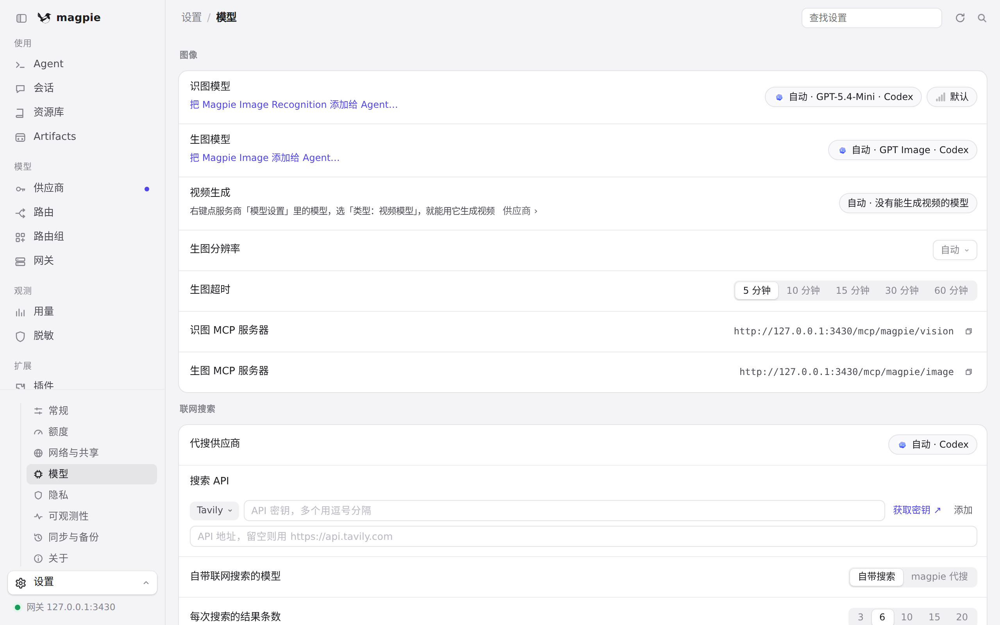

#1073 界面预览
commit 1d363c3 · 回到 PR · 这个 PR 把设置里几个模型选择的保存校验，从「任何写在已开启供应商下的模型名」改成「各自选择器里列出的模型」：图像识别模型按 provider.Served 校验，生图模型按供应商实际能生图的模型（gateway.Drawers）校验，Codex 的标题/描述/预测模型也按 Served 校验；不合法时返回 400、保留原值。设置页每次保存都会把自己的选择一起发回，与已存值相同的选择不再重新校验，而是保留并在页面上标为缺失。
红线是鼠标走过的轨迹，红色圆环是一次点击；底部文字是这一步在做什么。空格暂停，← → 逐段查看。

设置里的模型选择 · 设置›模型：图像识别与生图模型的选项，保存时按这里的列表校验